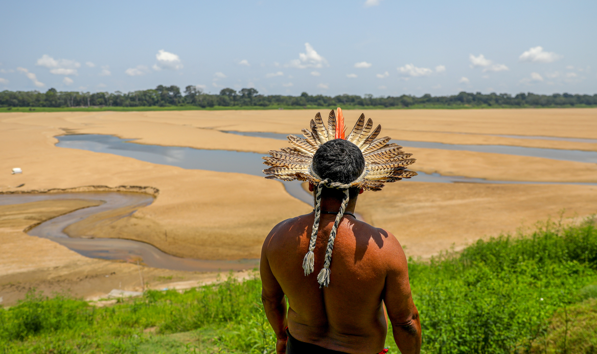

A Estiagem na Amazônia
Quais seus Impactos?

O
Rio Negro, um dos principais afluentes do Amazonas, chegou no último fim de semana a menos de 13 metros de profundidade, menor nível registrado desde 1902, quando começaram as medições. A expectativa é que a estiagem possa ser a maior já registrada na região e que a temporada de seca demore mais para acabar, estendendo-se até janeiro, com fortes impactos para a população. A cada nova atualização de dados, aumenta o número de municípios afetados, onde as pessoas têm dificuldades para navegar e ter acesso à água, com prejuízos para a rotina de trabalho e de estudos. Segundo boletim divulgado pela Defesa Civil do Amazonas no domingo, dia 22 de outubro, a seca histórica na região já afeta 633 mil pessoas e 59 cidades estão em estado de emergência. Das mais de 100 grandes indústrias do Polo Industrial de Manaus (PIM), 35 darão férias coletivas para 17 mil trabalhadores até 4 de novembro. Mais de 5,5 mil alunos em comunidades ribeirinhas no Amazonas já foram afetados pela baixa dos rios, que dificulta o acesso às escolas por embarcações. Os estudantes enfrentam longos percursos e terrenos íngremes para assistir às aulas. A seca também alterou a rotina de trabalho das mulheres indígenas do Alto Rio Negro, o que afeta a saúde e a produtividade nas roças e gera preocupações sobre a segurança alimentar e a economia local. As embarcações que operam no terminal graneleiro (Hermasa Itacoatiara/grãos) e nos principais terminais de contêineres da Zona Franca (Chibatão e Superterminais) estão com capacidade reduzida. A presença do El Niño é apontada como uma causa importante para a seca na Amazônia. Ele eleva a temperatura das águas do Oceano Pacífico Equatorial e provoca alterações nos padrões de ventos, umidade, temperatura e precipitação, principalmente nas áreas tropicais. No Brasil, o fenômenos diminui as chuvas e aumenta as temperaturas, afetando especialmente as regiões Norte e Nordeste. Mas o que agrava a situação é a combinação do El Niño com um aquecimento excepcional do Atlântico Tropical Norte, localizado acima da linha do Equador, que também inibe a formação de nuvens e reduz o volume de chuvas na Amazônia. Apesar de estar em queda neste ano, o desmatamento da Amazônia é outro fator de mudança do clima que desafia a região. De janeiro a agosto deste ano, o território desmatado na Amazônia equivale a quase duas vezes o tamanho do estado de São Paulo, sendo o sétimo maior desde o início do monitoramento em 2008. Além disso, queimadas, movimentação de sedimentos por meio do garimpo e de plantações de soja também influenciam uma cadeia de mudanças na Amazônia.Acesse links importantes:
Crise climática na Amazônia não comove nas redes sociais e nem na grande mídia, dizem ambientalistas
Queimadas promovidas por pecuarista de búfalos são a causa da fumaça em Manaus, aponta Observatório
Brasil diminui desmatamento mas Amazônia ainda está sendo queimada, aponta INPE
Seca na Amazônia encarece preços dos alimentos e põe em risco a segurança alimentar das populações
Seca, ondas de calor e chuvas intensas: Os eventos climáticos extremos no Brasil
AVÔ DE TIKTOKER DA CAPIVARA ESTÁ ENTRE OS CAUSADORES DA FUMAÇA EM MANAUS